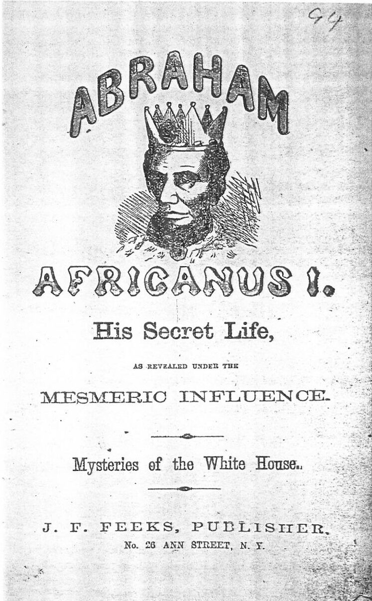
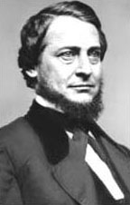

|
There were a number of groups in the North who opposed the
Civil War. The most prominent of these was the peace wing of
the Democratic Party, derisively called "Copperheads" by
their detractors, likely after the poisonous snake of the
same name. The Copperheads came to exercise substantial
influence among important segments of the northern
population over the course of the war, before finally fading
from the political scene in 1864.
In the first months after the firing on Fort Sumter,
Democrats and Republicans were generally united in their
desire to crush secession and reunite the country. As the
war dragged on, however, a number of Democrats were
increasingly critical of President Lincoln and the Union war
effort. Radical Republicans, firm advocates of the war,
wanted to discredit and silence these Democrats. Cincinnati
Gazette editor Whitelaw Reid began to call them Copperheads
in the pages of his newspaper. The term quickly gained wide
usage.
|

This Copperhead propaganda played on
voters' fears of racial equality, portraying President Lincoln
as king Abraham Africanus I.
|
The majority of individuals who were called Copperhead
were simply political conservatives who opposed the war
effort for any one of a number of reasons. Radicals,
however, were willing to stretch the truth to maximize the
propaganda value of their attacks. Radical newspaper editors
and political leaders told Americans that Copperheads not
only opposed the war, but that they were secretly providing
financial and logistical support for the southern war
effort.
Many northerners, particularly northern soldiers, were
enraged by this propaganda. A captain in the 46th
Pennsylvania wrote, "My first object is to crush this
infernal Rebellion the next to come North and bayonet such
fool miscreants as Vallandigham." The Radicals' depiction of
the Copperheads has found its way into many history books,
but the charges were almost entirely untrue. Copperheads
opposed the war, but they were not conspiring with the
South.
There were a number of important political leaders who
came to be identified as Copperheads. Most prominent was
Ohio Congressman Clement Vallandigham. Others included
Fernando Wood of New York, William A. Richardson of
Illinois, Daniel W. Voorhees of Indiana, and George Woodward
of Pennsylvania. A number of newspapers also became vocal
supporters of anti-war politics, including the Illinois
State Register, the Lacrosse Democratic and the Dubuque
Herald.
The Copperheads rallied around a number of issues. They
were angered by Lincoln's suspension of the writ of habeas
corpus, which they felt was unconstitutional. Copperheads
became increasingly vocal about this issue as a number of
them, including Vallandigham, were jailed for their
opposition to the war. In the Midwest, anti-war sentiment
was strong because the closure of the Mississippi River
compelled farmers to send their crops via railroads, which
were generally controlled by eastern businessmen.
Copperheads thus found much support for their argument that
the war was being fought to enrich eastern capitalists at
the expense of western farmers. The Copperheads also enjoyed
the backing of substantial numbers of German-Americans and
Irish-Americans in the Midwest and in eastern cities. Many
members of these ethnic groups opposed administration
policies, especially the draft and emancipation. Indeed,
emancipation was the central issue that crystallized
opposition to the war. Copperhead leaders strongly opposed
any change in the nation's strictly defined racial order.
Their supporters shared this attitude, and also had an
additional, more practical, concern. Freed slaves, they
feared, would move north and provide competition for jobs.
|

Clement Vallandigham, the most prominent
Copperhead politician.
|
These issues generated a great deal of support for the
Copperheads. Just as important in determining Copperhead
fortunes, however, were Union successes on the battlefield.
When the northern military failed to make progress, anti-war
sentiment was high. Northern victories, on the other hand,
undermined support for the Copperheads. The so-called high
point of Copperheadism occurred in the first months of 1863.
Lincoln issued the Emancipation Proclamation in January of
that year, and at the same time, the Union armies were
struggling on the battlefield. A number of prominent
Copperhead leaders, including Clement Vallandigham, took
advantage of the situation and ran for the governorships of
their states. They were heavily favored in these
gubernatorial contests until the Union won victories at
Gettysburg and Vicksburg. This rallied support for the war
among the northern populace, and when the elections came,
the Copperheads were all defeated.
The same pattern played itself out in 1864. Early in the
year, the Union military was not having a great deal of
success. At the Democratic convention, Copperheads were able
to secure control of the committee charged with drafting the
party platform, and they included a plank calling for an
immediate end to the war. Two things ultimately conspired to
undermine them. The first was that the convention chose
General George McClellan as its candidate, and he
immediately rejected the plank. The second was that General
William T. Sherman started to make progress in his march
through Georgia, culminating in the capture of Atlanta.
These reverses ultimately brought an end to the power of the
Copperheads.
Although the Copperheads essentially disappeared after
1864, their influence on the Democratic Party lasted a great
deal longer. The actions of the Copperheads during the war
made it much easier for Republicans in the postwar era to
disparage the Democrats as the party of treason. "Waving the
bloody flag," as this was called, was a common feature of
political contests for most of the rest of the 19th century.
Source: Joan Waugh, ed., Facts on File Encyclopedia of American
History: Civil War and Reconstruction, 1856 to 1869 (New York: Facts on
File, 2003), 81-83.
|